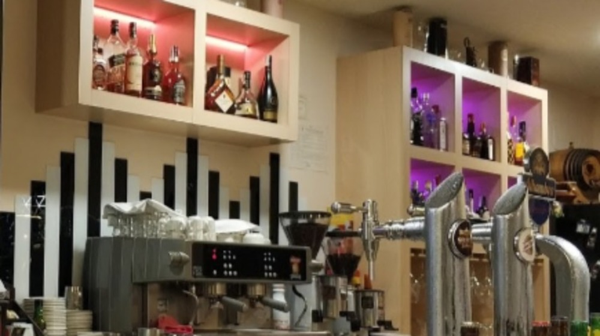

❮
❯
Aquí hacemos unos eventos de puta madre: ¿que quieres celebrar una
boda? Te vas a hartar de comer y de beber. ¿Que quieres celebrar
un bautizo? Te vas a hartar de comer y beber, sin alcohol.
¿Quieres celebrar un cumpleaños? Vas a reventar de lo que vas a
comer porque todo está cojonudo.
Pero ehhh!!! Aquí se paga
todo. Además que vas a comer lo que quiera nuestro jefe de sala,
conocido como Juanito.
Si quieres dos primeros te vale lo mismo pero no puedes comer dos segundos porque partimos piernas.
Va incluido agua o vino o cerveza o refresco.
Y ya que estás sentado pues te damos postre o café, ya que se ha demostrado que si comes en León y tomas postre y café es malo para la salud. Haznos caso, es por tu salud y la de los de tu alrededor.
Miercoles - Viernes 8:00 - 22:00
Sabado - Lunes 11:00 - 21:00
Lunes Cerrado
Horario de comedor
13:00 - 16:00
Despues se va Maxi, que tiene que ver la novela, o lo que sucede en realidad, dormir la siesta.
Teléfono:
555 11 12 22
W F I